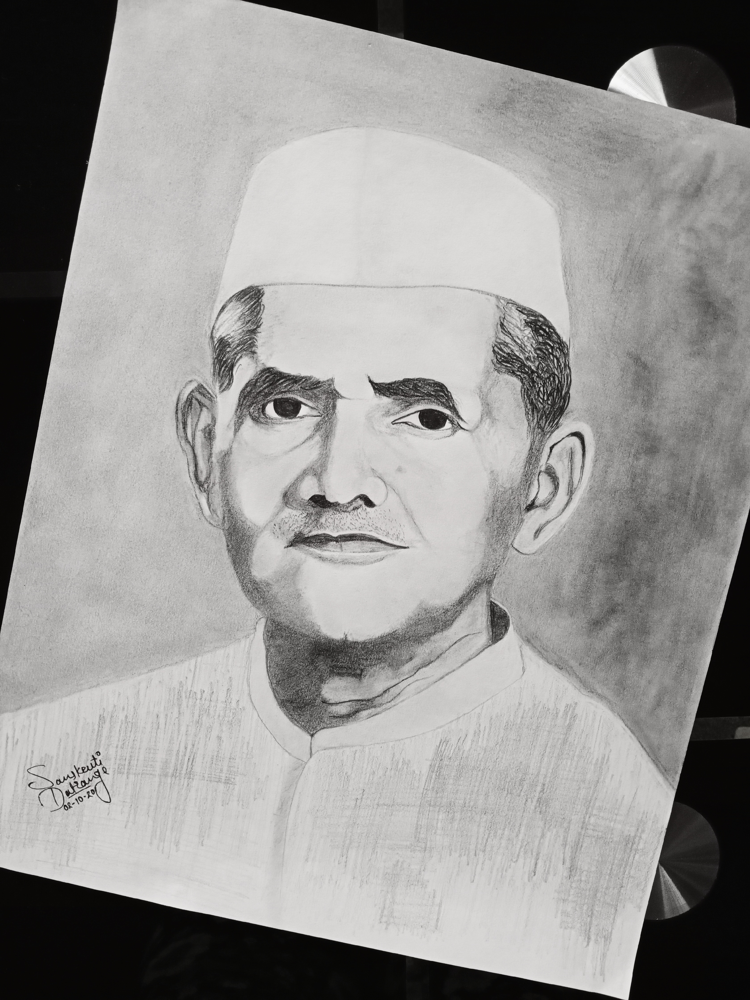

On October 2, 1904, a legend was born in the quiet town of Mughalsarai, Uttar Pradesh, India – Lal Bahadur Shastri. He was a man of remarkable simplicity, unwavering integrity, and boundless dedication. As we pay tribute to this extraordinary leader, we celebrate the indelible mark he left on the pages of India's history.
Lal Bahadur Shastri's journey began in a simple and modest household. Growing up in a time when India was fighting for independence from British rule, he imbibed the spirit of freedom and resilience. It was this spirit that propelled him into the heart of India's struggle for liberty.
In the annals of Indian politics, Shastri Ji's name stands tall as the second Prime Minister of the nation. He took office in 1964, and during his short but impactful tenure, he proved to be a symbol of hope and progress. His commitment to the welfare of the common man was unparalleled.
Lal Bahadur Shastri is perhaps best remembered for coining the immortal slogan, "Jai Jawan, Jai Kisan" – Hail the Soldier, Hail the Farmer. This phrase encapsulated his dedication to both the defenders of the nation and the backbone of its agrarian economy. Shastri Ji recognized the sacrifices of our soldiers and the hard work of our farmers, and he envisioned a prosperous and harmonious India.
During the trying times of the 1965 Indo-Pak war, Shastri Ji's leadership shone brilliantly. His calm and resolute demeanor provided the nation with the strength to withstand the challenges it faced. His unyielding spirit and wisdom led to a ceasefire, securing India's interests and honoring its commitment to peace.
Lal Bahadur Shastri's legacy lives on, not just in history books, but in the hearts and minds of every Indian. His principles of simplicity, honesty, and selflessness continue to inspire generations. His dedication to the well-being of the common people serves as a beacon for all leaders. As we pay homage to this remarkable leader, let us carry forward his message of unity, resilience, and a deep-rooted love for our nation. The amazing tribute to Lal Bahadur Shastri Ji is not just in words but in our actions, as we strive to build a better and brighter India, upholding the values he held dear. 
Jai Jawan, Jai Kisan! Jai Hind!